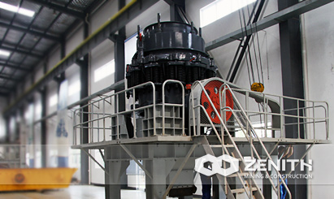

- 


S Cone Crusher
Cone crusher is the world's oldest type of crusher, also is the world's most widely used and the larger stock of crushing machinery. For higher productivity, better reliability and flexibility, longer service life, and better final product quality, the S cone crusher is your best choice absolutely. The innovations like stable lubrication system, excellent sealing feature, evidently reduce the production cost of material processing per ton. All of these can help you to achieve the highest level of profitability.
Overview of S Series Cone Crusher
Combined with leading technology, engineers from Zenith have adopted several innovations in the S Series cone crusher, such as stable lubrication system, excellent sealing feature, evidently reduce the production cost in per ton hour material processed. Besides, S series cone crusher offer several outstanding features such as excellent tramp release system, unique hydraulic lifting system, all of these features ensure the S series cone crusher offer the unbeatable performance in secondary, tertiary and quaternary applications. All of these can help you to achieve the highest level of profitability.
S cone crusher Main features and advantages
- Low cost of daily operation, maintenance and parts selection and structure design is reasonable, long life, low power consumption, distribution reasonable.
- In order to support large efforts in key parts broken selected on a special material.
- Balanced run-out rotation ensures best capacity.
- Stable bevel wheel transmission device
- Proper operation, continuously load until the machine shut down scheduled.
- More crushing cavity. S series cone crusher adopts high cavity design , so users can choose crusher cavity type according to the site of broken high efficiency, uniform particle size, well stone type,rolling acetabula wall and the broken wall and uniform wear and long service life.
The tacnology data
| Model | Movable Cone Diametermm (inch) | Chamber Style | Opening Side | Closed Side | Discharging Opening (mm) | REV (r/min) | Power (kw) | Motor Model | Capacity (t/h) | Machine Size (mm) |
|---|---|---|---|---|---|---|---|---|---|---|
| Max.Feeding (mm) | ||||||||||
| 36(3′) | 900 (3′) | medium | 83 | 102 | 9-22 | 580 | 6-75 | Y315S-6/75 | 45-91 | 2821×1880 ×2164 |
| coarse | 159 | 175 | 13-38 | 59-163 | ||||||
| 36(3′) | 914 (3′) | fine | 13 | 41 | 3-13 | 580 | 6-75 | Y315S-6/75 | 27-90 | 2821×1880 ×2410 |
| medium | 33 | 60 | 3-16 | 27-100 | ||||||
| coarse | 51 | 76 | 6-19 | 65-140 | ||||||
| 51(4.25′) | 1295 (4 1/4′) | fine | 109 | 137 | 13-31 | 485 | 6-185 | Y355M2-6/185 | 109-181 | 2800×2342 ×2668 |
| medium | 188 | 210 | 16-31 | 132-253 | ||||||
| coarse | 216 | 241 | 19-51 | 172-349 | ||||||
| 51(4.25′) | 1295 (4 1/4′) | fine | 29 | 64 | 3-16 | 485 | 6-160 | Y355M1-6/160 | 36-163 | 2800×2342 ×2668 |
| medium | 54 | 89 | 6-16 | 82-163 | ||||||
| coarse | 70 | 105 | 10-25 | 109-227 | ||||||
| 66(5.5′) | 1650 (5 1/2′) | fine | 188 | 209 | 16-38 | 485 | 6-240 | 181-327 | 3911×2870 ×3771 | |
| medium | 213 | 241 | 22-51 | 258-417 | ||||||
| coarse | 241 | 268 | 25-64 | 299-635 | ||||||
| 66(5.5′) | 1650 (5 1/2′) | fine | 35 | 70 | 5-13 | 485 | 6-240 | 90-209 | 3917×2870 ×3771 | |
| medium | 54 | 89 | 6-19 | 136-281 | ||||||
| coarse | 98 | 133 | 10-25 | 190-336 | ||||||
| 84(7′) | 2134 (7′) | fine | 253 | 278 | 19-38 | 435 | 6-400 | 381-726 | 5200×4300 ×4700 | |
| medium | 303 | 334 | 25-51 | 608-998 | ||||||
| coarse | 334 | 369 | 31-64 | 870-1400 | ||||||
| 84(7′) | 2134 (7′) | fine | 51 | 105 | 5-16 | 435 | 6-400 | 190-408 | 5200×4300 ×4700 | |
| medium | 95 | 133 | 10-19 | 354-508 | ||||||
| coarse | 127 | 178 | 13-25 | 454-599 | ||||||